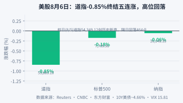

周四（8月6日）美股三大指数集体收跌，但内部剧烈分化。道琼斯收53,885.10（-0.85%，-464.05点），终结五连涨，从前一日创下的历史新高54,349.12回落；标普500收7,709.96（-0.18%）；纳斯达克收26,348.35（-0.06%）。 三张脸三种表情：道指被权重股Salesforce拽着走，标普微跌，纳指几乎平盘——科技股在全线恐慌中成了最抗跌的一块。
道指的敌人是财报季的"尾部暴雷"。 Salesforce下跌3-4%，拖累道指约120点，是当日的最大单一拖累。软件板块集体走弱——AppLovin暴跌19.7%、Datadog大跌14-17%，市场对"AI软件高估值+业绩不达预期"的容忍度正在急速收窄。存储芯片这边更惨烈：西部数据-13%、闪迪-6.8%、SK海力士ADR-5%、美光-2%——财报季里，凡是"预期打满"的AI概念都在被重新称重。
但硬币的另一面，是英伟达的孤独狂欢。 马斯克在SpaceX财报电话会上宣布未来AI基础设施全面采用英伟达芯片、称其架构是"最优秀的AI运算平台"，英伟达收盘涨逾3%、市值逼近$5.8万亿、五连涨创两个月新高。美光则在连续三个交易日上涨后市值重返万亿美元俱乐部。资金正在做一件极端的事：把所有AI信仰集中押注到"确定性最强"的少数龙头身上。
| 指数 | 收盘（8/6） | 当日涨跌幅 | 备注 |
|---|---|---|---|
| 道琼斯 | 53,885.10 | -0.85% | 终结五连涨，前日54,349历史新高 |
| 标普500 | 7,709.96 | -0.18% | 微跌，防御韧性 |
| 纳斯达克 | 26,348.35 | -0.06% | 科技抗跌，仅微跌 |
| 10年期美债 | ~4.66% | 收益率上行 | 等待非农，短端预期松动 |
| VIX恐慌指数 | 15.81 | -4.2% | 恐慌退潮，盘中曾触及18.43 |

今夜20:30非农是8月的分水岭。剧本只有两幕：① 非农弱（延续ADP的爆冷）→ 9月暂停加息坐实 → 美债收益率下行、黄金继续冲、科技股估值压力释放，AI龙头（英伟达/美光）有望带动纳指补涨；② 非农意外强 → 加息预期回摆 → 黄金回调、道指反弹、但高估值科技股（AppLovin/Datadog们）还要继续挤水分。在数据落地前，仓位重于方向——现在不是博反弹的时刻，是等裁决的时刻。